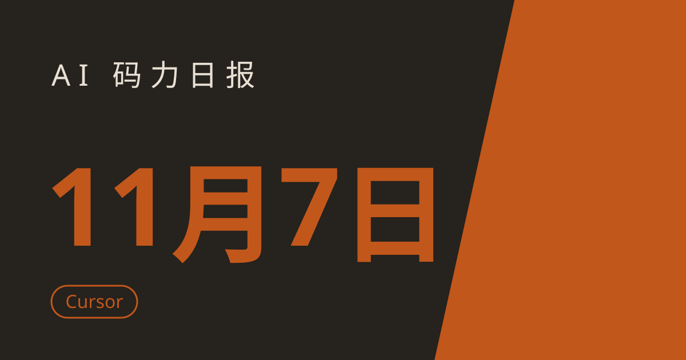

AI 码力日报 · 2026年11月7日

⚡ 一句话速览
- Cursor 云端 agent 一句话变上线应用：脚手架、Postgres、登录、托管全包，11 月 5 日上线，付费档可用。
- METR 独立评估：Anthropic 模型进步速度约 1.9 倍，其中约八成归功于 AI 自己搞研发，但关键证据大多被涂黑了。
- OpenAI 承诺自付未来数据中心电费：40 个地方公投否决数据中心之后，抛出一份社区契约灭火。
- Google Vids 每月免费 3 条 15 秒 AI 视频：Omni 1.2 Flash 驱动，有 Google 账号就能领。
🤖 今日 AI Coding 动态
Cursor 云端 agent 一句话变上线应用：写完代码，部署也包了
跟你有啥关系：如果你平时在 Cursor 里写小工具，最烦的一步从来不是写代码，而是把它弄上网给别人用——现在这一步也能一句话交给 agent 了。Cursor 11 月 5 日上线 Build Live Apps：开一个云端 agent，明确告诉它你要做个应用，它会搭脚手架、按需起一个 Postgres 数据库、把登录接进 Cursor SSO、跑完安全检查，最后给你一个能分享的链接。代码可以从零起（走 Cursor Origin），也可以直接部署已有的 GitHub 仓库，GitLab 还在路上。发布前有两道关：确定性检查加 agent 安全检查（比如不让密钥、.env、source map 混进发布物），过关后还得你手动点发布，不会自动上线。限制要说清楚：只在云端 agent 里能用，本地 agent 不行；免费档和 $8 的 Plus 都没有云端 agent，得 Premium（$30/月）起步；官方截至撰写时没公布托管价格、用量上限和数据库备份方案。我的判断：写代码便宜之后，「上线」成了最后的瓶颈，Cursor 这一步补得正是地方；但没标价的托管先别往上放正经东西，小工具、演示先玩起来再说。原文链接
METR 进 Anthropic 蹲了 11 周：AI 搞研发，模型进步速度翻了近一倍
跟你有啥关系：这可能是今年最硬的一份「AI 加速 AI」的实测——不是厂商自说自话，是独立评估机构 METR 在 Anthropic 内部待了 11 周（8 月 12 日到 10 月 29 日）后交的报告。结论：自 2025 年 10 月以来，Anthropic 模型能力进步的速度约为此前的 1.9 倍（95% 置信区间 1.5~2.8 倍），相当于一年干了过去两年的活；METR 主观估计其中约 80% 归功于 AI 自己参与研发。数字背后要打几个折：这个 1.9 倍高度依赖建模假设，换一种拟合方式结果会在 1.1~2.9 倍之间晃；Anthropic 对非公开信息有单方涂黑权，METR 直言「最有信息量的证据大多被涂黑了」，完整报告约 100 页也没公开；而且报告测的是「AI 帮人搞研发更快」，不是「AI 自己全自动搞研发」。同一天还有一则人事消息：Claude Code 与 Cowork 的产品负责人 Cat Wu 确认跳槽 OpenAI，负责 Core Products 产品管理——Anthropic 的 agent 掌舵人，成了 OpenAI 的人。原文链接 / Cat Wu 跳槽
OpenAI 承诺自付未来数据中心电费：40 个地方公投说不之后
跟你有啥关系：如果你住在数据中心选址附近，或者关心 AI 基建的电价账单由谁买单，这份承诺直接关系到你的电费。11 月 3 日地方公投里，41 项涉数据中心的议案中有 40 项被选民否决；11 月 5 日 OpenAI 发布一份社区契约，承诺在自己拥有并运营的未来数据中心园区，全额承担电力与基建成本，不转嫁给当地居民。背景是数据中心耗电与水资源争议正在从线上吵到线下，选民已经开始用选票 veto 选址。我的判断：这是一次典型的「先表态、后落地」——契约只覆盖未来自有园区，不涉及现有项目和合租算力；但信号很明确：大厂已经意识到，不解决「谁付电费」这个问题，算力扩张在地方层面会寸步难行。原文链接
美国联邦政府下令全面排除 DeepSeek：采购清单上直接除名
跟你有啥关系：如果你在美国联邦政府项目里用 DeepSeek 的模型或服务，现在得换了——而且连基于 DeepSeek 做的第三方产品也在排除范围内。美国国土安全部、战争部（国防部）和国家情报总监 11 月 5 日前后分别签发 FASCSA（联邦采购供应链安全法）命令，要求所有联邦行政机构把 DeepSeek 及其关联实体的产品和服务排除出采购，并从现有采购中移除。其中民用口径最宽：DHS 把「覆盖产品」定义为包括所有用 DeepSeek 实现开发的第三方产品和服务。理由是 DHS 10 月 20 日的命令里写的：DeepSeek 的免费开源模型存在多重威胁向量，包括已知技术漏洞、须向中国政府提供访问的义务，以及收集的信息可能被用于针对美国政府的情报。我的判断：这是 DeepSeek 在美国官方市场的全面封杀令，比单纯的下载禁令狠得多；对国内开发者直接影响有限，但用 DeepSeek 做美国政府生意的出海团队得立刻改方案。原文链接
Google 把 Gemini 在中小学默认关了：管理员不开，学生就用不上
跟你有啥关系：如果你在学校管 Google Workspace，或者孩子在用学校发的 Chromebook，这次改动直接决定了他们能不能在课堂上碰到 AI。Google 11 月 3 日发博文宣布：K-12 学生账号下的 Gemini、Gemini Notebook、Gemini in Classroom 和搜索里的 AI 功能，今后默认全部关闭，须由学校管理员手动开启才可用；而且学校一旦屏蔽 AI，连 Google 搜索的学生访问权限也会一并受影响。新控制先在美国推行，再推向全球，具体时间未定。背景是 Google 8 月刚把 Gemini 聊天开放给所有年龄段的课堂学生，随即招致「没跟学校商量就推 AI」的批评。我的判断：方向是对的——把开关交还给学校而不是默认全开；但「关 AI 就等于关搜索」这个捆绑很值得盯着看，等于逼学校在「完全不用 AI」和「全盘接受」之间二选一。原文链接
📱 AI 应用新品
Google Vids 每月免费 3 条 15 秒 AI 视频：有 Google 账号就能领
是什么：Google 11 月 5 日随 Gemini Omni 1.2 Flash 上线，给 Google Vids 加了免费额度：任何 Google 账号或 Workspace 订阅用户，每月可在 Vids 里免费生成最多 3 条 15 秒 AI 视频。解决什么问题：以前 AI 视频要么按秒付费、要么得订阅，轻度用户想试试手感还得先掏钱；现在每月 3 条免费，够做一条短视频、一个产品演示或者一个节日祝福。免费额度/价格：每月 3 条、每条最长 15 秒，免费；超出部分走付费价，720p 每秒 $0.07。适合谁：做短视频、做产品演示、想试试 AI 视频手感又不想先付费的人；提醒一句：Google 自己承认，快速体育动作、频繁换脚本和复杂物理场景目前还是短板，别拿它去做高难度镜头。原文链接
🐑 今日羊毛
JetBrains Junie Lite：免费 coding agent 档，不用绑卡、日常使用基本不限量
一句话：JetBrains 的 Junie Lite 是常驻免费档，不是试用：只要一个 JetBrains 账号就能在 JetBrains Air 和 Junie CLI 里用 coding agent，底层模型目前是 Qwen 3.6 27B，推理只跑在 JetBrains 自己的基础设施上，代码不拿去训练模型。
- 怎么薅：装个 JetBrains IDE 2026.3（Air 已内置）或 Junie CLI，用 JetBrains 账号登录，第一次请求就自动开通，不用单独注册、不用绑卡。直达链接
- 有效期：常驻免费档，不倒计时；但官方保留更换底层模型的权利，复杂多文件任务仍建议上付费前沿模型（截至撰写时）
- 适合谁：日常写代码、改 Bug、写样板代码的 JetBrains 用户；约省一笔 agent 订阅钱
Bolt.new 每天 30 万 token 免费：不用绑卡就能从一句话搭应用
一句话：Bolt.new 免费档每天给 30 万 token、每月上限 100 万 token，足够从一句话搭出带数据库和托管的可用应用，代码能打包下载或同步 GitHub。
- 怎么薅：打开 bolt.new 注册账号直接用，免费档自带数据库和托管，公开与私有项目都行。直达链接
- 有效期：长期免费档，每天重置、不结转（截至撰写时，2026 年 11 月 3 日核对）
- 适合谁：想零成本试试 AI 应用搭建、做演示原型的人；约省 $25/月的 Pro 订阅
GitHub Copilot Free：每月 2000 次代码补全，不用绑卡
一句话：GitHub Copilot 免费档每月给 2000 次代码补全，外加有限的聊天和 agent 模式额度，覆盖主流编辑器和 Copilot CLI，不用绑卡就能开。
- 怎么薅：在编辑器里装 Copilot 插件，用 GitHub 账号登录选 Free 档即可；聊天和 agent 用的是一个小额度的 AI credits 池，用完即止。直达链接
- 有效期：长期免费档，按月重置（截至撰写时，2026 年 11 月 2 日核对）
- 适合谁：学生、轻度写代码的人、想先试试 Copilot 再决定要不要掏 $10/月的人
Pollinations.ai：免注册、免 key 的免费生图 API
一句话：Pollinations 是目前唯一主流的「零注册」免费生图 API：不用账号、不用 key、不用绑卡，直接拼 URL 就能出图，适合嵌进自己的小工具和演示里。
- 怎么薅：直接按文档格式调 URL（相同提示词加相同 seed 返回相同图片），不用注册；想稳定跑生产再考虑它的付费档。直达链接
- 有效期：长期免费，有合理速率限制（截至撰写时，2026 年 11 月核对）
- 适合谁：做演示、做小工具、需要随手调一张图的开发者；约省一笔生图 API 钱
⭐ 今日 GitHub 热门项目
anthropics/skills：Anthropic 官方的 Agent Skills 大本营，18.8 万星
一句话介绍：Anthropic 官方公开的 Agent Skills 仓库：技能就是装着指令、脚本和资源的目录，Claude 按需加载，专门任务上表现立刻不一样。解决什么问题：agent 做专项任务时最缺的是「标准做法」——这个仓库直接给了官方示范：创意设计、开发技术、企业沟通、文档处理（docx/pdf/pptx/xlsx 的技能就是 Claude 文档功能背后的原版实现），还有 Agent Skills 规范本身和技能模板。⭐ 约 188,153（截至撰写时）。适合：写 Claude Code 技能、想抄官方范式的人；装法也简单：Claude Code 里跑 /plugin marketplace add anthropics/skills 就行。项目地址
calesthio/OpenMontage：把 AI 编程助手变成一整间视频制作工作室
一句话介绍：开源的 agent 视频生产系统：12 条生产管线、100 多个工具、700 多个 agent 技能与制作知识文件，一句话就能让你的 AI 编程助手从写代码改行拍片。解决什么问题：AI 视频通常是「几张静帧动一动就叫视频」；OpenMontage 的路子是真制作：调研、写脚本、生成素材、配音、配乐、剪辑、合成一条龙，还能从免费素材库里找真实镜头剪纪录片。一支 60 秒皮克斯风动画短片官方实测成本 $1.33，一支 100 秒纪录片靠真实素材零生成成本。⭐ 约 77,660（截至撰写时）。适合：想批量做短视频、产品片、科普片的独立开发者和内容团队；提醒一句：AGPL-3.0 协议，商用前先看清授权条款。项目地址
jakubkrehel/skills：让 agent 做出不像 AI 做的界面
一句话介绍：一组帮你做出好界面的 agent 技能合集，专治 AI 生成界面那种一眼假的「AI 味」。解决什么问题：agent 写前端最大的毛病是审美拉胯、间距混乱、配色廉价；这套技能把界面设计的套路写成 agent 能直接照做的指令，Claude Code、Cursor、Codex 都能用。⭐ 约 11,268，本周 +1,840（截至撰写时）。适合：经常让 agent 写前端、又对出图质量不满意的人；装上就能用，不用改工作流。项目地址
🤗 Hugging Face 热门模型
ricursiveAI/Ripple-65B-Preview：65B 小模型，Terminal-Bench 干翻 500B 巨兽
是什么：Ricursive Intelligence 的首个模型，65B 参数的稠密 Transformer，12T token 从头预训练，支持 1M 上下文，约 3 小时前更新后冲上 HF 趋势榜。能干嘛：本地跑是它最大的卖点——65B 体量能塞进 NVIDIA DGX Spark 这种消费级硬件，官方还给了 NVFP4 量化版和 Colab 上手教程；不想折腾就走 API。跑分很能打：Terminal-Bench 2.1 自报 80.52，超过了 Reflection Beam 501B（80.1）、Meta 的 816B 开源模型（76.4）、NVIDIA Nemotron 3 Ultra 550B（56.4），SWE-bench Verified 76.5——注意这是官方自报数据，仅供参考。下载约 2.01k、点赞约 326（截至撰写时）。适合谁：想在本地跑一个能打的 agent 编程模型、又不想养几百 B 参数的人；Apache 2.0 协议，商用友好。模型地址
mistralai/Mistral-Large-4-1T-A52B：Mistral 万亿参数旗舰，欧洲自家 GPU 训出来的
是什么：Mistral 迄今最大、最强的模型，1T 参数的 MoE（每次推理激活约 52B），原生多模态，1M 上下文，4 天前更新。能干嘛：本地跑就别想了——1T 体量是数据中心级别的；想用就走 Mistral API（mistral-large-4），官方演示画廊首周有少量免费额度。跑分上：Artificial Analysis 编程 agent 指数 48%，与领先开源模型 GLM-5.3 打平，但每任务平均少用 47% 的 token；综合智能指数 26，西方开源模型里最高。下载约 10.5k、点赞约 1.63k（截至撰写时）。适合谁：做编程 agent、网络安全、金融法律场景，想找个欧洲开源旗舰压阵的团队；注意许可证是 Mistral 生态开源许可，拿它对外提供模型服务要另外谈商业授权。模型地址
🛠️ 值得一试的工具：JetBrains Air
是什么：JetBrains IDE 2026.3 里新加的多 agent 编排层：不用换 IDE，就能在编辑器里跑 Claude Agent、Codex、Gemini、GitHub Copilot、Junie、OpenCode 等多个 agent，跟踪它们各自的进度、审 diff、跑测试，全程在 IDE 里完成。解决什么痛点：多 agent 并行最大的麻烦是「各干各的、没人统筹」——Air 把编排、跟踪和验收收进一个地方，agent 少走弯路，你审每一处改动也不用来回切窗口。免费额度：EAP 期间免费加入；自带 Junie Lite 免费档，不用订阅也能跑 agent；你自己的订阅和 API key 也能直接接进来。
verdict： 值得试——JetBrains 终于把「多 agent 编排」做进了 IDE 本体，对已经在用 JetBrains 全家桶的人几乎是零成本尝鲜；但提醒一句：还在 EAP 阶段，云端 agent 会话要 JetBrains AI 订阅，正式定价也没出，先当尝鲜工具用，别急着把主力工作流迁过去。工具地址
🎓 3 分钟小教程：用 Cursor 云端 agent 一句话把应用发上线
前置条件：Cursor Premium 及以上订阅（云端 agent 需 $30/月起的档位）、一个想做的应用点子。
- 把 Cursor 更新到最新版，开一个云端 agent（不是本地 agent），明确告诉它你要做个应用，比如：「做一个帮我记每日开销的应用，要有登录和数据存储」。
- 等 agent 搭好脚手架：它会自动配好项目结构，需要数据库时会起一个 Postgres，需要登录时会接 Cursor SSO——这个过程不用你动手。
- 在预览里点一点、试一试，哪里不对直接在对话里说，让它改到满意为止。
- 点发布：先过安全检查（查密钥、.env、source map 有没有漏进发布物），过关后你选一个域名、手动点发布，拿到链接就能分享给别人。
预期效果：几分钟拿到一个带数据库和登录的、能公开访问的真应用，不用自己配服务器、不用自己接部署。提醒一句：官方截至撰写时没公布托管价格和用量上限，先拿小工具和演示练手，别急着把生产服务搬上去。
数据截至撰写时，仅供参考。